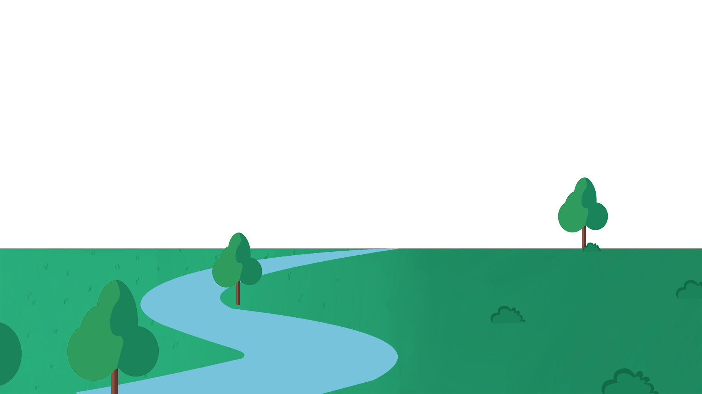
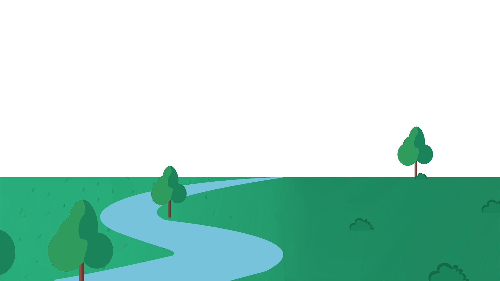

อนอดีตไปเมื่อประมาณ 4600 ล้านปีก่อนในยุคพรีแคมเบรียน
ที่โลกของเราได้กำเนิดขึ้นจากการควบแน่นของกลุ่มแก๊ส และ ฝุ่นผงจำนวนมากในอวกาศ

ภายในโลกของเราประกอบไปด้วยแก๊สไนโตรเจน ไฮโดรเจน ออกซิเจน และคาร์บอนไดออกไซด์
แก๊สเหล่านี้ได้รวมตัวกันจนกลายมาเป็นสารประกอบทางเคมีหลายชนิด เช่น มีเทนและแอมโมเนีย
ซึ่งในภาวะที่เหมาะสม
สารประกอบทางเคมีเหล่านี้จะรวมตัวกันเป็นสารประกอบอินทรีย์จำพวกกรดอะมิโน
กลีเซอรอล กรดไขมัน และน้ำตาลเชิงเดี่ยว
จนเกิดเป็นสิ่งที่มีชีวิตเซลล์เดียวขึ้นมา

เเมื่อเวลาผ่านไปสิ่งมีชีวิตเซลล์เดียวได้กลายพันธุ์เป็นสิ่งมีชีวิตหลายๆชนิด
และผ่านการคัดเลือกโดยธรรมชาติ
ให้สายพันธุ์ที่เหมาะสมกับสภาพแวดล้อมสามารถดำรงเผ่าพันธุ์ต่อไปได้
ส่วนสายพันธุ์ที่ไม่มีการปรับตัวให้เหมาะสมกับสภาพแวดล้อม
จะสูญพันธุ์ไปในที่สุด ตามทฤษฎีของลามาร์ก
และ ทฤษฎีวิวัฒนาการโดยการคัดเลือกตามธรรมชาติ ของชาร์ลส์ ดาร์วิน

จะเห็นได้ว่าในโลกเรามีสิ่งมีชีวิตหลากหลาย
ซึ่งสิ่งมีชีวิตทุกชนิดล้วนมีบรรพบุรุษร่วมกันคือสิ่งมีชีวิตเซลล์เดียว
แต่สิ่งที่ทำให้แต่ละชนิดแตกต่างกันก็คือ “สภาพแวดล้อม” และ “ความสามารถปรับตัว”
ของสิ่งมีชีวิตแต่ละชนิดนั่นเอง

และมนุษย์ เป็นหนึ่งในสายพันธุ์ที่ผ่านการปรับตัวมาอย่างยาวนาน